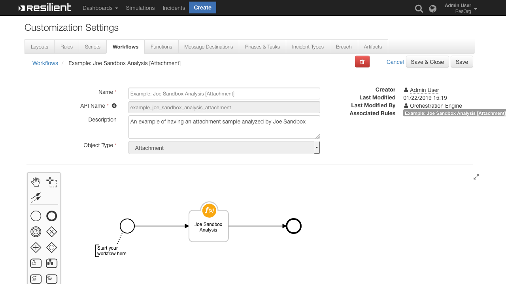

Resilient Circuits Joe Sandbox functions
This package contains a function that executes a Joe Sandbox Analysis of an Attachment or Artifact and returns the Analysis Report to IBM Resilient.

v38.2.3resilient_circuits>=32.0.0
All the components for running this integration in a container already exist when using the App Host app.
To install,
Navigate to Administrative Settings and then the Apps tab.
Click the Install button and select the downloaded file: app-joe_sandbox_analysis-1.0.4.zip.
Go to the Configuration tab and edit the app.config file, editing the API key for fn_joe_sandbox_analysis qand making any additional setting changes.
Download the fn_joe_sandbox_analysis.zip.
Copy the .zip to your Integration Server and SSH into it.
Unzip the package:
$ unzip fn_joe_sandbox_analysis-x.x.x.zip
Change Directory into the unzipped directory:
$ cd fn_joe_sandbox_analysis-x.x.x
Install the package:
$ pip install fn_joe_sandbox_analysis-x.x.x.tar.gz
Import the configurations into your app.config file:
$ resilient-circuits config -u -l fn-joe-sandbox-analysis
Import the fn_joe_sandbox_analysis customizations into the Resilient platform:
$ resilient-circuits customize -y -l fn-joe-sandbox-analysis
Open the config file, scroll to the bottom and edit your fn_joe_sandbox_analysis configurations:
$ nano ~/.resilient/app.config
| Config | Required | Example | Description |
|---|---|---|---|
| jsb_accept_tac | Yes | True |
Enter a description of the config here |
| jsb_api_key | Yes | `` | Enter a description of the config here |
| jsb_analysis_url | Yes | https://jbxcloud.joesecurity.org/v2/analysis |
Enter a description of the config here |
| jsb_analysis_report_ping_delay | Yes | 120 |
Enter a description of the config here |
| jsb_analysis_report_request_timeout | Yes | 1800 |
Enter a description of the config here |
Save and Close the app.config file.
[Optional]: Run selftest to test the Integration you configured:
$ resilient-circuits selftest -l fn-joe-sandbox-analysis
Run resilient-circuits or restart the Service on Windows/Linux:
$ resilient-circuits run
$ pip uninstall fn-joe-sandbox-analysis
# to comment out the section.There are several ways to verify the successful operation of a function.
/var/log/resilient-scripting/resilient-scripting.log./usr/share/co3/logs.client.log may contain additional information regarding the execution of functions..resilient/app.config file under the section [resilient] and the property logdir.app.log.| Name | Version | Author | Support URL |
|---|---|---|---|
| fn_joe_sandbox_analysis | 1.0.4 | IBM Resilient | http://ibm.biz/resilientcommunity |